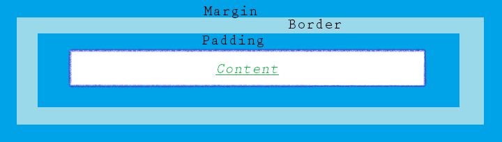
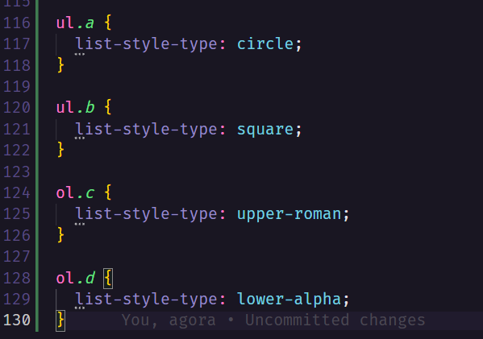

CSS é a sigla para Cascading Style Sheet, ou Folhas em Estilo Cascata.
A função do CSS é estilizar os elementos HTML de forma simples e mais organizada. Dessa forma, todas as instruções sobre como esses elementos devem ser apresentados na tela podem ser feitas utilizando a tag <style> dentro do arquivo HTML ou em um arquivo separado, geralmente com o nome de "style.css"; isso facilita a manutenção das páginas web uma vez que temos o conteúdo da página separado dos comandos que irão compor o design desse conteúdo.
Sintaxes
Para entender como o CSS indica o design de um elemento HTML precisamos entender como são compostas suas sintaxes:
Todo comando em CSS precisa de um seletor seguido por um bloco, representado por chaves.
O seletor é composto pela tag HTML que indicará quais partes da página, que estão dentro daquela tag, serão afetadas por aqueles comandos, como por exempo <h1>, <p> <mark> etc. As declarações contidas no bloco que vem logo após o seletor devem conter a propriedade a ser alterada e o valor (característica) que você deseja atribuir a ela
No exemplo abaixo podemos perceber a estrutura do comando CSS e os parâmetros que estão sendo aplicados a esse parágrafo aqui.
Nesse caso temos color, font-family e font-size como como as propriedades do parágrafo e logo em seguida os valores que serão atribuídos a elas para compor o design do parágrafo.
Comentários
Comentários em CSS são indicados por /* e */
Seletores
Os seletores em CSS são usados como uma forma de identificar quais os elementos que devem receber aquelas características, uma vez que as tags podem ser utilizadas mais de uma vez na página web. Vamos ver agora alguns tipos de seletores e suas funções:
Utilizar apenas a tag como seletor implica que todos os conteúdos que utilizam aquela tag receberão aqueles valores. Nesse caso não há distinção entre os diferentes usos daquela tag, então ela padroniza todos os conteúdos de uma única vez.
O seletor id utiliza o id de um elemento HTML para identificar qual conteúdo dentre todos que compartilham a mesma tag deve receber aqueles valores. Seu propósito é selecionar um único conteúdo e aplicar esses parâmetros únicos a ele, para fazer isso basta adicionar uma hashtag (#) seguido do id do elemento.
OBS: É importante ter em mente que o nome do id não pode começar com um número.
O seletor class faz a seleção de elementos HTML que possuem uma classe específica atribuída a ele. Para fazer isso basta adicionar um ponto (.) seguido do nome da classe que você deu aos elementos que deseja estilizar.
Diferente do seletor id, o seletor class é usado para atribuir o mesmo estilo a diferentes elementos HTML, fazendo isso uma única vez para que não haja repetição desnecessária de código e traga mais eficácia na hora de utilizar o CSS.
Heading de exemplo do seletor class
Parágrafo de exemplo do seletor class
Se desejar, você pode também especificar as tags que deverão ser afetadas pelo seletor class, por exemplo: utilizar o comando p.nome-da-classe indica que apenas os paragráfos irão receber aqueles parâmetros, mesmo que outras tags também estejam designadas essa classe. Pode-se também atribuir duas classes a um mesmo elemento, basta apenas indicar o nome das duas no class="".
Para selecionar todos os elementos HTML de uma determinada página basta apenas usar um asterisco (*) como seletor, e para agrupar diferentes elementos que possuem os mesmos valores de estilo basta indicar as tags dos mesmos na posição do seletor, separando-as por vírgulas.
Como inserir o CSS no código HTML
Existem três maneiras de inserir o CSS dentro de um código HTML, são elas: external CSS, internal CSS e inline CSS
1. External CSS
Nesse primeiro caso, o CSS está contido em uma página diferente, referenciada com a tag <link> na seção <head> do documento HTML. Essa página é destinada apenas a CSS e portanto não deve conter códigos em HTML.
É assim que a página deve se parecer:
2. Internal CSS
Nesse segundo caso, o CSS estará contido dentro do documento HTML, dentro da tag <style>, que se encontra na seção <head>. É utilizada principalmente quando aquela página específica possui um design diferente das demais páginas.
3. Inline CSS
No terceiro e último caso o CSS é incorporado diretamente nas tags HTML. Isso pode causar certa desorganização no código, portanto é recomendado que não seja a forma principal usada para incorporar o CSS à pagina HTML.
Heading contendo inline CSS
Paragráfo contendo inline CSS
OBS: Se mais uma maneira de inserção do CSS for usada para um único elemento, o estilo que prevalecerá será o último a ser executado no código.
Quando mais de um estilo for utilizado a ordem de prioridade será sempre: inline CSS, external e internal CSS, e por fim o design padrão do navegador.
Bordas
O CSS possui uma propriedade que define bordas aos elementos. A propriedade "border-style" é responsável por indicar o tipo de borda e pode comportar até 4 tipos diferentes de bordas (uma para cada lado). Os tipos existentes são:
- border-style: dotted;
- border-style: dashed;
- border-style: solid;
- border-style: double;
- border-style: groove;
- border-style: ridge;
- border-style: inset;
- border-style: outset;
- border-style: none;
- border-style: hidden;
border-style: dotted;
border-style: dashed;
border-style: solid;
border-style: double;
border-style: groove;
border-style: ridge;
border-style: inset;
border-style: outset;
border-style: none;
Você pode também especificar a largura e a cor da borda usando os comandos "border-width" e "border-color", respectivamente. Para arredondar as bordas basta utilizar "border-radius".
Margens
As margens definem o espaço entre um elemento e os elementos a sua volta, fora das bordas.
As 4 propriedades de uma margem são:
- margin-top: parte de cima da margem
- margin-bottom: parte de baixo da margem
- margin-right: parte direita da margem
- margin-left: parte esquerda da margem
Elas podem receber os valores: auto (calculada pela navegador); length (tamanho especificado em px, cm etc); % (baseia-se na porcentagem da largura do elemento); inherit (é herdada de um outro elemento).
Padding
O padding define o espaço entre um elemento e sua borda. Assim como a margem, o padding possui 4 propriedades:
- padding-top: parte de cima do padding
- padding-bottom: parte de baixo do padding
- padding-right: parte direita do padding
- padding-left: parte esquerda do padding
Ele pode receber os valores: length (tamanho especificado em px, cm etc); % (baseia-se na porcentagem da largura do elemento); inherit (é herdado de um outro elemento).
Height/Width
São responsáveis por estipular as proporções do objeto no mundo HTML, o height é referente à altura, enquanto o width determina a largura do elemento. Veja na prática:

(width recebe 30% da tela do navegador)
(height recebe 100px)
(width recebe 100px e o height 10px)
Note que quando somente uma das propriedades é especificada (height/width) automaticamente o complemento é ajustado respeitando as proporções iniciais. Os valores podem ser expressos em '%' ou 'px', porcentagem e pixels respectivamente.
Box Model
O termo "Modelo de Caixa" se dá devido a estruturação do HTML seguir um padrão em blocos, os elementos que o compõe são:
Por meio do CSS é possível manusear esses espaços atribuindo valores aos mesmos de acordo com o contexto da aplicação.
Outline
É uma linha desenhada aos redor dos elementos, é importante se atentar para não confundir com as bordas, pois elas são externas a tais. As propriedades são: outline-style, outline-color, outline-width, outline-offset e outline.
Testando diferentes estilos:
dotted
dashed
double
Lists
Pode personalizar a sua lisa com uma infinidade de ferramenta, é necessário apenas mencioná-la no mundo CSS.
Tables
A aparência de uma tabela HTML pode ser muito melhorada com CSS:
| Nome | Idade | País |
|---|---|---|
| Maria | 12 | Brasil |
| Joaquim | 20 | França |
| Ana Lúcia | 88 | Canadá |